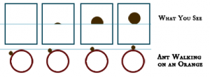
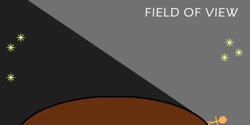

အကယ်လို့ သင်ဟာ ကမ္ဘာ လုံးတာကို လုံးဝ လက်မခံဘူး ဆိုရင် ဒီဆောင်းပါးက အနည်းဆုံးတော့ သင့်အတွက် တွေးစရာ တစ်ခု ဖြစ်လာစေ မှာပါ။ သင်ဟာ ကမ္ဘာလုံးတာ လက်ခံပေမယ့် သင့်သူငယ်ချင်း “ကမ္ဘာပြား သမား” တွေကို ဘယ်လို ရှင်းပြရ မလဲ မသိဘူး ဆိုရင်တော့ ဒီဆောင်းပါးက သင့်အတွက် အတော်လေး အသုံးဝင် လာမှာ ဖြစ်ပါတယ်။
အောက်မှာ ကမ္ဘာ လုံးကြောင်း အထောက်အထား တွေ တင်ပြထားပါတယ်။ အချို့က တိုက်ရိုက် အထောက်အထားတွေ ဖြစ်ပြီး အချို့ကတော့ သွယ်ဝိုက် အထောက်အထားများ ဖြစ်ကြပါတယ်။
၁။ လ
ယခုခေတ် လူတွေ အတွက်တော့ လဟာ ကမ္ဘာကို ပတ်နေတဲ့ ဧရာမ ကျောက်တုံး အကြီးကြီး ဆိုတာ သိပြီးကြပါပြီ။ လရဲ့ ပုံသဏ္ဍာန် ကလဲ ဘောလုံး တစ်လုံးလို လုံးဝန်းနေတယ် ဆိုတာ အားလုံး လက်ခံထားကြပါတယ် (ဒါကိုတော့ ကမ္ဘာပြား သမားတွေလဲ လက်ခံကြပါတယ်။) ဒါပေမယ့် ရှေးဟောင်း ဂရိလူမျိုး တွေအတွက်ကတော့ လဟာ ပဟေဠိ တစ်ခု ဖြစ်နေပါတယ်။ရှေးဂရိတွေဟာ လဆိုတာ ဘယ်လို အရာ မျိုးလဲ ဆိုတာကို သိနိုင်ဖို့ စူးစမ်းမှု အမျိုးမျိုး ပြုလုပ်ခဲ့ ကြပါတယ်။ ဒီလို စူးစမ်း မှုတွေကြောင့်လဲ လနဲ့ ပါတ်သက်လို့ အတော်အတင့် သိရှိလာခဲ့ကြပါတယ်။ ဒီကနေမှ ကျွန်တော်တို့ရဲ့ ကမ္ဘာကြီး ကလဲ လလိုပဲ လုံးလုံးကြီး ဆိုတာ တဖြေးဖြေး တွေးဆမိလာ ကြပါတယ်။
ရှေးဂရိ ပညာကျော် အရစ်စတိုတယ် ဟာ လကြတ်တဲ့ အချိန် လပေါ်ကို ကျနေတဲ့ ကမ္ဘာရဲ့ အရိပ်ဟာ အဝိုင်းစက်စက် ဖြစ်နေတယ် ဆိုတာကို သတိပြုမိ ခဲ့ပါတယ်။ ဒီကနေပြီး ကမ္ဘာဟာ မပြားပဲ လုံးနေမယ် ဆိုတာကို အရစ်စတိုတယ် စပြီး သတိပြုမိ ခဲ့ပါတယ်။
လကြတ်တိုင်း လပေါ် ကျရောက်တဲ့ အရိပ်ဟာ အဝိုင်းစက်စက် ဖြစ်နေတာ ကြည့်ရင် ကျွန်တော်တို့ရဲ့ ကမ္ဘာဟာ မပြားပဲ လုံးနေတယ် ဆိုတာ သိနိုင်ပါတယ်။

၂။ မိုးကုတ်စက်ဝိုင်းက သင်္ဘောများ
ပင်လယ် ကမ်းခြေမှာ နေတဲ့ သူတွေ (သို့) ပင်လယ်ထဲ ထွက်နေရတဲ့ သူတွေ ဆိုရင် သိကြပါတယ်။ အဝေး မိုးကုတ်စက်ဝိုင်းကနေ သင်္ဘောတစ်စင်း လာရင် တစ်စင်းလုံးကို ချက်ခြင်း မြင်ရတာ မဟုတ်ပါဘူး။ အရင်ဆုံး သင်္ဘောရဲ့ ရွက်တိုင် (သို့) ခေါင်းတိုင် ကနေ စမြင်ရတာပါ။ တဖြည်းဖြည်း သင်္ဘာက ကိုယ်နဲ့ နီးလာတဲ့ အခါမှ သင်္ဘောရဲ့ ကိုယ်ထည်ပိုင်းကို မြင်ကြရတာ ဖြစ်ပါတယ်။ဒါ ဘာ့ကြောင့်လဲ ဆိုရင် ကမ္ဘာကြီးက ခုံးနေတာမို့ နဲနဲ ဝေးတဲ့ နေရာက သင်္ဘော / အရာဝတ္ထု ပစ္စည်းတွေဟာ ဝေးသွားရင် ဒီအခုံးနဲ့ ကွယ်သွားတာမို့ မမြင်ကြရတာ ဖြစ်ပါတယ်။ မိုးကုတ်စက်ဝိုင်းလို့ ကျွန်တော်တို့ ပြောတဲ့ နေရာဟာ တကယ်က ကမ္ဘာခုံးနေတာမို့ ဒီ အခုံးနဲ့ ကွယ်နေတဲ့ နေရာရဲ့ အစပ်နား ဖြစ်ပါတယ်။ မိုးကုတ်စက်ဝိုင်းကို လွန်ပြီး မမြင်ရတာကလဲ ဒီ ကမ္ဘာမြေရဲ့ အခုံးက ကွယ်နေလို့ ဖြစ်ပါတယ်။

ပုရွက်ဆိတ် ကလေးက လိမ္မော်သီး အခုံးအတိုင်း လျှောက်လာရင်တော့ ခေါင်းပိုင်းကနေ စပြီး တဖြည်းဖြည်းမှ ကိုယ်ပိုင်းနဲ့ နောက်ဆုံး ခြေထောက်တွေကို မြင်ရမှာ ဖြစ်ပါတယ်။ ပင်လယ်ထဲမှာ မိုးကုတ် စက်ဝိုင်းကနေ သင်္ဘော ခေါင်းတိုင် အရင် မြင်ရတာလဲ ဒီသဘောပဲ ဖြစ်ပါတယ်။
၃။ ကြယ်တွေရဲ့ တည်နေရာဟာ ကမ္ဘာ့ တစ်နေရာနဲ့တစ်နေရာ မတူပါဘူး
အရစ်စတိုတယ်ဟာ တခါတော့ အီဂျစ်ပြည်နဲ့ ဆိုက်ပရပ် ကျွန်းတွေဆီကို ခရီးထွက်ခဲ့ပါတယ်။ ပြန်လာတော့ သူက “အီဂျစ်နဲ့ ဆိုက်ပရပ် မှာ တို့ဆီက ညကောင်းကင်မှာ မမြင်ရတဲ့ ကြယ်တွေ ရှိနေတယ်” ဆိုပြီး ရေးသား ခဲ့ပါတယ်။ အရစ်စတိုတယ်က ဆက်လက်ပြီး “ဒီဖြစ်ရပ်ကို ရှင်းပြနိုင်ဖို့ တစ်ခုတည်းသော အဖြေကတော့ လူတွေဟာ ဒီကြယ်တွေကို လုံးဝန်းတဲ့ ကမ္ဘာ့ မြေမျက်နှာ ပြင်ရဲ့ မတူညီတဲ့ အရပ်တွေကနေ ကြည့်နေလို့ပဲ ဖြစ်ရမယ်” လို့ ကောက်ချက်ဆွဲခဲ့ပါတယ်။ ပြီးတော့ “ကမ္ဘာလုံး ကြီးရဲ့ အရွယ်ဟာ သိပ်တော့ ကြီးဟန် မတူပါဘူး။ ဘာ့ကြောင့်ဆို ဒီလောက် ခရီး အကွာအဝေးလေး မှာတင် ကြယ်တွေရဲ့ တည်နေရာက သိသိသာသာ ပြောင်းသွားလို့ပါ” လို့ ဆက်ပြောခဲ့ ပါသေးတယ်။
၄။ အရိပ်တွေရဲ့အနေအထား
မြေပေါ်မှာ တုတ်တစ်ချောင်း ထောင်ထားရင် နေရောင်ထိုးတဲ့အခါ အရိပ်ကျ နေမှာ ဖြစ်ပါတယ်။ နေက အရှေ့က အနောက်ကို ရွှေ့သွားတာနဲ့ အမျှ အရိပ်ရဲ့ အရှည်ကလဲ ပြောင်းသွားမှာ ဖြစ်သလို အရိပ်ကလဲ ရွှေ့လျှားသွားမှာ ဖြစ်ပါတယ်။အကယ်လို့ ကမ္ဘာသာ ပြားနေမယ် ဆိုရင် ကမ္ဘာပေါ်က မတူညီတဲ့ အရပ်ဒေသ နှစ်ခုမှာ ကျရောက်တဲ့ အရိပ်ရဲ့ အရှည်ဟာလဲ တူညီနေ ရမှာ ဖြစ်ပါတယ်။
ဒါပေမယ့် တကယ်တမ်း ကျတော့ အီကွေတာနဲ့ နီးတဲ့ နေရာနားက အရိပ်နဲ့ အီကွေတာနဲ့ ဝေးတဲ့ နေရာမှာ ကျရောက်တဲ့ အရိပ် နှစ်ခုဟာ အရှည်ချင်း မတူညီ ပါဘူး။ ဒါဘာ့ကြောင့် ဖြစ်ရလဲ ဆိုတော့ ကမ္ဘာက လုံးနေတဲ့ အတွက် နေရောင် ကျရောက်တဲ့ ထောင့်ကလဲ ကွာသွားလို့ ဖြစ်ပါတယ်။ (ပုံတွက် ကြည့်ပါ)။
ဒီ အခြေခံကို အသုံးချပြီး ဂရိ ပညာရှင် အီရေတို စသီးနီး (276 – 194 BC) ဟာ ကမ္ဘာကြီးရဲ့ အဝန်းကို တွက်ချက်ကြည့် ခဲ့ပါတယ်။
၅။ မြင့်တဲ့နေရာက ကြည့်ရင်ပိုဝေးဝေး မြင်ရတယ်
မြေပြင်ညီညာ နေတဲ့ နေရာ (သို့မဟုတ် ပင်လယ် ကမ်းစပ်မှာ) အဝေးကို ကြည့်ရင် မျက်စေ့တဆုံး မြင်ရမှာ ဖြစ်ပါတယ်။ ဒီနေရာ ကနေ သင်ဘယ်လောက် ဝေးဝေးထိ မြင်နိုင်သလဲ ဆိုတာကို မှတ်သားထားလိုက်ပါ။ပြီးရင် အနီးက သစ်ပင် မြင့်မြင့် (သို့) အဆောက်အဦး မြင့်မြင့်ပေါ် တက်ပြီး ကြည့်ကြည့်ပါ။ သင်မြင်ရတဲ့ အကွာအဝေး ပိုဝေးလာတာကို သတိပြုမိမှာ ဖြစ်ပါတယ်။
အများအား ဖြင့်တော့ ဒီလို ဝေးဝေး မြင်ရတာကို အလွယ်တကူပဲ ကြားက ခံနေတဲ့ သစ်ပင်တွေ၊ အဆောက်အဦတွေ မရှိတော့လို့ ပိုဝေးဝေး မြင်ရတယ်ပဲ ထင်ကြပါတယ်။ ဒါပေမယ့် ဒါက တကယ့် အကြောင်းရင်း မဟုတ်ပါဘူး။

ဒါဘာကြောင့် ဖြစ်ရတာလဲ ဆိုတော့ နိမ့်တဲ့ နေရာက ကမ္ဘာမြေ ခုံးနေတော့ ဒီအခုံး နေရာထက် ကျော်ပြီး မမြင်ရော့ လို့ပါ။ မြင်မြင့် တက်လိုက်တော့ အခုံးကို အပေါ်စီးက ကြည့်သလို ဖြစ်ပြီး ပိုဝေးဝေး မြင်ရတာပဲ ဖြစ်ပါတယ်။
၆။ လေယာဉ်စီးကြည့်ပါ
လေယာဉ် စီးတဲ့အခါ လေယာဉ် ပေါ်ကနေ ကမ္ဘာမြေပြင်ကို ကြည့်ကြည့်ပါ။ အထူးသဖြင့် ခရီးရှည် သွားပြီး ပင်လယ်ပေါ် ဖြတ်ပျံတဲ့ အချိန်မျိုးပေါ့။ ဒီအခါ စိတ်ဝင်စား စရာ နှစ်ခုကို သတိပြုမိမှာ ဖြစ်ပါတယ်။(၁) လေယာဉ်တွေဟာ နာရီပေါင်း များစွာ မျဉ်းဖြောင့်အတိုင်း အတည့် ပျံသန်း ပေမယ့်လဲ ကမ္ဘာ့ အစွန်းကနေ ပြုတ်ကျ မသွားပါဘူး။
(၂) လေယာဉ် ပြတင်းကနေ ကမ္ဘာမြေကို ကြည့်လိုက်ရင် မိုးကုတ်စက်ဝိုင်း နေရာမှာ ခုံးနေတာကို တွေ့ကြရမှာ ဖြစ်ပါတယ်။ အထူးသဖြင့် ပင်လယ်ပေါ် ဖြတ်ပျံတဲ့ အခါမျိုးမှာ ပိုသိသာ ပါတယ်။
ရ။ အခြားဂြိုဟ်တွေကို ကြည့်ကြည့်ပါ
ကမ္ဘာက အခြား ဂြိုဟ်တွေနဲ့ ကွာသင့်သလောက် ကွာပါတယ်။ အထူးသဖြင့် ကမ္ဘာပေါ်မှာသာ သက်ရှိတွေ မှီတင်း နေထိုင် နိုင် ကြပါတယ်။ ဒါပေမယ့် အခြား ဂြိုဟ်တွေနဲ့ တူတဲ့အ ချက်တွေ အများကြီး ရှိနေပါ သေးတယ်။အကြမ်းဖြင်း ပြောရရင် အခြား ဂြိုဟ်တွေ ပေါ်မှာ တွေ့ရတတ်တဲ့ ရူပဗေဒ သဘောတရား တွေဟာ ကမ္ဘာပေါ်မှာလဲ တူညီမှုတွေ ရှိလိမ့်မယ်လို့ ယူဆလို့ ရပါတယ်။
၁၆၁၀ မှာ ဂယ်လီလီယိုက သူ့ရဲ့ နက္ခတ်ကြည့် မှန်ပြောင်းနဲ့ ဂျူပီတာ ဂြိုဟ်ကို ကြည့်ကြည့်တဲ့ အခါ ဂျူပီတာကို ပတ်နေတဲ့ လတွေကို တွေ့ရှိခဲ့ ပါတယ်။ ဒီ အချက်ကနေ ကောက်ချက် ဆွဲလိုက်တော့ ဂြိုဟ်တွေဟာ လုံးနေ တယ် ဆိုတဲ့ အဖြေ ရခဲ့ပါတယ်။
နေအဖွဲ့အစည်း ထဲက ဂြိုဟ်တွေ နဲ့ လ တွေ အားလုံးဟာ အလုံးတွေ ဖြစ်ကြပါတယ်။ ကမ္ဘာကမှ ထူးထူး ခြားခြား ပြားနေတယ် ဆိုရင် ကျွန်တော်တို့ သိထားတဲ့ ဂြိုဟ်တွေ မွေးဖွား ဖြစ်တည်လာမှု သဘောတရား တွေ အားလုံးနဲ့ ဖီလာ ဆန့်ကျင်ဖက် ဖြစ်နေမှာ ဖြစ်ပါတယ်။ ဒါ့ကြောင့် ကောက်ချက်ဆွဲရရင် ကမ္ဘာ ပြားတယ် ဆိုတာ မဖြစ်နိုင်တော့ ပါဘူး။ ကမ္ဘာဟာ လုံးကို လုံးရမှာ ဖြစ်ပါတယ်။
၈။ အချိန်ကွာခြားမှု
ကမ္ဘာပေါ်က တစ်နေရာ နဲ့ တစ်နေရာ အချိန် မတူညီ ကြပါဘူး။ ဂျပန်ပြည်မှာ လူတွေ အိပ်ယာ ထတဲ့ အချိန် ကျွန်တော်တို့က အိပ်လို့ ကောင်းတုန်းပါ။ ကျွန်တော်တို့ အိပ်ရာ ထတဲ့ မနက် ၆ နာရီ ၇ နာရီ လောက်မှာ အင်္ဂလန်မှာ သန်းခေါင်ပဲ ရှိနေသေးပြီ အမေရိကား မှာတော့ လူတွေ ညစာ စားတုန်း ရှိနေပါ သေးတယ်။ဒီလို အချိန် ကွာခြားမှု ဖြစ်ရတာ ဘာကြောင့်လဲ ဆိုတော့ ကမ္ဘာလုံးကြီးရဲ့ တစ်ဖက်မှာ နေရောင် ကျရောက် နေချိန်မှာ အခြား တစ်ဖက်မှာက နေမရှိတဲ့ အတွက် မှောင်နေလို့ ဖြစ်ပါတယ်။ ဒါကို သိသိ သာသာ လက်တွေ့ မြင်ချင်ရင် မှောင်နေတဲ့ အချိန် ဘော်လုံး တစ်လုံးကို တစ်ယောက်က ကိုင်ထားပြီး အခြား တစ်ယောက်က ခပ်လှမ်းလှမ်း ကနေ လက်နှိပ်ဓါတ်မီးနဲ့ ထိုးကြည့်ပါ။ ပြီးရင် ဘော်လုံးကို တဖြည်းဖြည်း လှည့်ကြည့်ရင် နေရောင်ရတဲ့ နေရာ (နေ့ဖြစ်တဲ့ အရပ်) ဟာ ကမ္ဘာလည်တာနဲ့ အမျှ ပြောင်းသွားတာကို တွေ့ရမှာ ဖြစ်ပါတယ်။
၉။ ကမ္ဘာ့မြေဆွဲအား Gravity
ဒြပ်ရှိတဲ့ အရာဝတ္ထုတိုင်းမှာ ဆွဲငင်အား Gravity ရှိပါတယ်။ ဒီ ဆွဲငင်အားမှာ ဗဟိုချက် ရှိပါတယ်။ သူ့နားက အရာ ဝတ္ထုတွေကို ဒီ ဗဟိုချက် ဆီကို ဆွဲတာပါ။ အကြမ်းဖျင်း ပြောရရင် ဒီ ဗဟိုချက်ဟာ အရာဝတ္ထုရဲ့ အလယ် ဗဟိုနေရာမှာ ရှိပါတယ်။ကမ္ဘာက အလုံးကြီး ဖြစ်တဲ့ အတွက် ကမ္ဘာ့ ဆွဲငင်အား ဗဟိုချက် ဟာလဲ ကမ္ဘာ အလုံးကြီးရဲ့ အလယ် ဗဟို နေရာမှာ ရှိနေပါတယ်။ ဒါ့ကြောင့်လဲ ကမ္ဘာပေါ်မှာ ဘယ်နေရာ မှာပဲ ရှိနေရှိနေ ကမ္ဘာမြေမျက်နှာပြင်ပေါ်က လူနဲ့ အရာ ဝတ္ထုတွေကို ဆွဲတဲ့ အားဟာ တစ်နေရာနဲ့ တစ်နေရာ မကွာတာ ဖြစ်ပါတယ်။
ဒါဆို ကမ္ဘာ အပြားကြီးလို့ စဉ်းစားကြည့် ရအောင်ဗျာ။ ဒါဆို ဒီ ကမ္ဘာပြား ကြီးရဲ့ ဆွဲအား ဗဟိုဟာ ဒီ ကမ္ဘာ အပြားကြီးရဲ့ အလယ်လောက်မှာ ရှိနေမှာ ဖြစ်ပါတယ်။
ဒါဆို ကမ္ဘာပြား အလယ်လောက်က လူတွေအတွက် ဆွဲငင်အား ဗဟိုက သူတို့ရဲ့ အောက်မှာမို့ အောက်တည့်တည့်ကို ဆွဲနေပေမယ့် ကမ္ဘာပြား အစွန်းနားက လူတွေ အတွက်ကတော့ ဆွဲငင်အား ဗဟိုက သူတို့နဲ့ တစောင်း ဖြစ်လို့ နေမှာ ဖြစ်ပါတယ်။ ဒါ့ကြောင့် ဒီအရပ်က လူတွေအဖို့ ပြုတ်ကျရင် ဘေးတိုက် တစောင်း ကျနေမှာ ဖြစ်ပါတယ်။

၁၀။ အာကာသကရိုက်ထားတဲ့ ကမ္ဘာ့ဓါတ်ပုံ

ဒါ့ကြောင့် ကမ္ဘာ လုံးတယ် ဆိုတာ ဘယ်လိုမှ ငြင်းစရာ မရှိအောင် ခိုင်မာတဲ့ အချက် တစ်ခု ဖြစ်ကြောင်း တင်ပြလိုက် ရပါတယ်။
— မောင်သူရ (မြန်မာ့သိပ္ပံ) —
Reference: 10 easy ways you can tell for yourself that the Earth is not flat | Popular Science